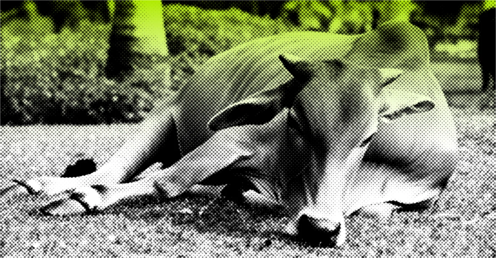

Происхождение приметы
Согласно опросу британского Метеорологического бюро, более 60% населения Великобритании верят, что коровы, лежащие на пастбище, являются верным признаком приближающегося дождя[1]. Существует несколько теорий, объясняющих это поведение:
1. Коровы якобы чувствуют повышение влажности воздуха или падение атмосферного давления перед дождем и ложатся, чтобы сохранить сухой участок травы для выпаса[1].
2. Исследование в США показало, что коровы предпочитают стоять в жаркую погоду для лучшего охлаждения, что привело к гипотезе о том, что они могут ложиться перед дождем из-за похолодания[1].
1. Коровы якобы чувствуют повышение влажности воздуха или падение атмосферного давления перед дождем и ложатся, чтобы сохранить сухой участок травы для выпаса[1].
2. Исследование в США показало, что коровы предпочитают стоять в жаркую погоду для лучшего охлаждения, что привело к гипотезе о том, что они могут ложиться перед дождем из-за похолодания[1].
Научные исследования
Несмотря на популярность этой приметы, научных доказательств ее достоверности нет. Исследователи отмечают следующее:
1. Коровы проводят до половины своего времени лежа, отдыхая или пережевывая жвачку, поэтому вероятность увидеть их лежащими в любой момент времени составляет около 50%[1].
2. Как стадные животные, коровы склонны подражать поведению друг друга, что увеличивает шансы увидеть целое стадо лежащим одновременно[1].
3. Исследования Университетов Аризоны и Северного Миссури показали, что коровы действительно склонны ложиться при понижении температуры и стоять в жару[9]. Это может объяснять некоторую связь с погодой, но не является прямым предсказанием дождя.
1. Коровы проводят до половины своего времени лежа, отдыхая или пережевывая жвачку, поэтому вероятность увидеть их лежащими в любой момент времени составляет около 50%[1].
2. Как стадные животные, коровы склонны подражать поведению друг друга, что увеличивает шансы увидеть целое стадо лежащим одновременно[1].
3. Исследования Университетов Аризоны и Северного Миссури показали, что коровы действительно склонны ложиться при понижении температуры и стоять в жару[9]. Это может объяснять некоторую связь с погодой, но не является прямым предсказанием дождя.
Факторы, влияющие на поведение коров
Поведение коров зависит от множества факторов, включая:
1. Внутренние факторы: порода, возраст, эструс, иерархия, гомеостаз организма[5].
2. Внешние факторы: температура воздуха, влажность, скорость ветра, размер пастбища, качество и количество травы[5].
3. Атмосферное давление: исследования показали положительную корреляцию между ежедневно пройденным расстоянием и атмосферным давлением[5].
1. Внутренние факторы: порода, возраст, эструс, иерархия, гомеостаз организма[5].
2. Внешние факторы: температура воздуха, влажность, скорость ветра, размер пастбища, качество и количество травы[5].
3. Атмосферное давление: исследования показали положительную корреляцию между ежедневно пройденным расстоянием и атмосферным давлением[5].
Реальные причины лежания коров
Коровы ложатся по многим причинам, не связанным с погодой:
1. Отдых и пережевывание жвачки[2].
2. Регуляция температуры тела: в прохладную погоду коровы могут ложиться для сохранения тепла.
3. Повышение продуктивности: когда корова лежит, кровоток к вымени увеличивается на 30%, что напрямую влияет на производство молока.
1. Отдых и пережевывание жвачки[2].
2. Регуляция температуры тела: в прохладную погоду коровы могут ложиться для сохранения тепла.
3. Повышение продуктивности: когда корова лежит, кровоток к вымени увеличивается на 30%, что напрямую влияет на производство молока.
Что в итоге?
Хотя народная примета о коровах, предсказывающих дождь, широко распространена, научных доказательств ее достоверности нет. Поведение коров зависит от множества факторов, и любая связь между их лежанием и последующими изменениями погоды, скорее всего, является совпадением или отражением изменений температуры окружающей среды. Для точного прогноза погоды лучше полагаться на современные метеорологические методы и технологии.